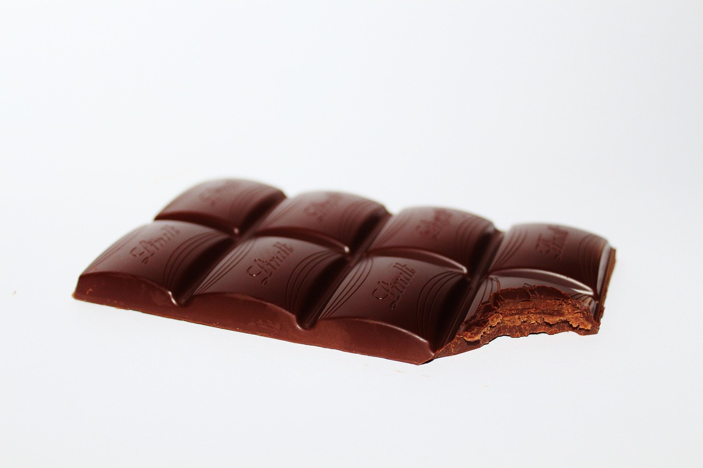

Ingredientes
- 150g de chocolate ao leite ou meio amargo, picado
- ½ xícara (chá) de manteiga sem sal (~100g)
- 3 ovos inteiros + 2 gemas
- ½ xícara (chá) de açúcar (~100g)
- 1 xícara (chá) de farinha de trigo peneirada (~120g)
Utensílios
- 8 ramequins ou forminhas individuais (~10cm de diâmetro)
- Tigela, fouet (batedor de arame) ou espátula, e assadeira
Modo de Preparo
- Preaqueça o forno a 200°C (forno médio-alto).
- Derreta o chocolate com a manteiga em banho-maria ou no micro-ondas (intercalando a cada 30 segundos). Reserve.
- Bata os ovos, as gemas e o açúcar até formar uma mistura cremosa e mais clara
- Acrescente o chocolate derretido com cuidado, mexendo delicadamente.
- Peneire a farinha de trigo e incorpore suavemente, para manter a leveza da massa.
- Unte bem as forminhas e polvilhe com farinha. Encha cada uma até cerca de metade ou dois terços da capacidade.
- Leve ao forno por aproximadamente 8 a 10 minutos, até que as bordas estejam firmes e o centro ainda esteja mole e cremoso.
- Retire do forno e desenforme imediatamente com cuidado para evitar que murche. Sirva ainda quente, idealmente com sorvete de creme.
Dicas Essenciais
- Utilize forno bem quente e formas bem untadas para obter a crosta crocante por fora e o interior cremoso.
- Não use palito para testar o ponto — o centro deve continuar levemente mole e com aspecto úmido.
- Desenforme rapidamente após retirar do forno, para manter a estrutura e a aparência do bolinho.